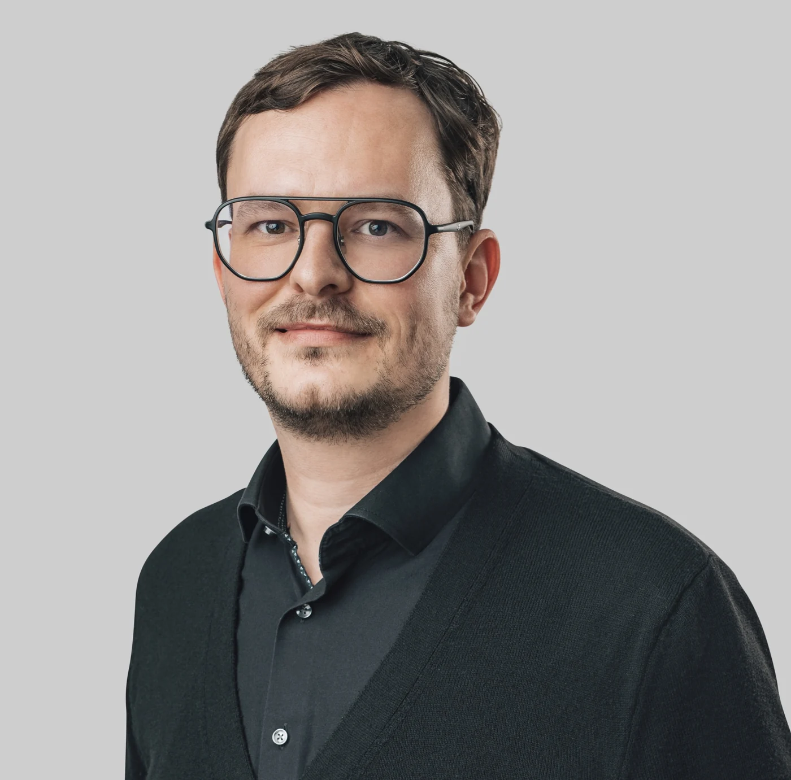

Professor of Educational Psychology (W3 equivalent)
HMU Health and Medical University Erfurt
My academic work spans educational psychology, empirical educational research, teacher education, and the application of psychological knowledge in practice.
HMU Health and Medical University Erfurt
Humboldt-Universität zu Berlin
Humboldt-Universität zu Berlin
Department of Primary Education, Mathematics Education · Prof. Dr. Katja Eilerts
Humboldt-Universität zu Berlin
bologna.lab (Research-Based Learning) · under the direction of Prof. Dr. Eva Inés Obergfell
Freie Universität Berlin
Department of Methods and Evaluation · Prof. Dr. Michael Eid
Humboldt-Universität zu Berlin
Department of Systematic Didactics and Educational Research · Prof. Dr. Thomas Koinzer
University of Oslo
Centre for Educational Measurement (CEMO) · Prof. Dr. Sigrid Blömeke
Humboldt-Universität zu Berlin
Department of Systematic Didactics and Educational Research · Prof. Dr. Sigrid Blömeke

Humboldt-Universität zu Berlin · Venia legendi in Educational Sciences
Thesis: Achievement Emotions among Pre-Service Early Childhood Educators and Primary School Teachers in Mathematics
Mentor: Prof. Dr. Hans Anand Pant
Reviewers: Prof. Dr. Uta Klusmann, Prof. Dr. Gerda Hagenauer, Prof. Dr. Hedwig Gasteiger
Humboldt-Universität zu Berlin · summa cum laude
Dissertation: Mathematics in Early Childhood Education? Validation of an Assessment of Pre-Service Early Childhood Educators’ Mathematical Content Knowledge
Supervisor: Prof. Dr. Sigrid Blömeke
Reviewers: Prof. Dr. Sigrid Blömeke, Prof. Dr. Michael Eid, Prof. Dr. Hans Anand Pant
Freie Universität Berlin · Final grade: 1.0 (German grading system)
2021: University of Bern (Prof. Dr. Tina Hascher) and Ludwig Maximilian University of Munich (Prof. Dr. Anne C. Frenzel).
Private practice, Berlin, Germany · Cognitive Behavioral Therapy (CBT)
Specialization: Cognitive Behavioral Therapy · Final grade: 1.0
Institut für Verhaltenstherapie Berlin (IVB)
Department of Psychiatry and Psychotherapy, Charité – Universitätsmedizin Berlin · Prof. Dr. Isabella Heuser
Institut für Verhaltenstherapie Berlin (IVB)
Berlin University Alliance · For research on shame and pride in mathematics among pre-service primary school teachers.
International Conference on Modeling and Measuring Competencies in Higher Education, Mainz.
Natural Variability of Pre-School Teachers’ Mathematics Content Knowledge and Mathematics Anxiety
Experience in academic governance and institutional development at HMU Health and Medical University Erfurt and Humboldt-Universität zu Berlin, including:
Ad-hoc reviewer for international peer-reviewed journals, including Review of Educational Research, Teaching and Teacher Education, British Journal of Educational Psychology, AERA Open, Computers in Human Behavior, and Social Psychology of Education.
External reviewer for the Research Council of KU Leuven (2024).
Organization of scientific conferences, symposia, and events supporting early-career researchers, including activities at Humboldt-Universität zu Berlin and national research conferences.
Conference reviewing for the GEBF, EARLI, and AERA.
I am committed to communicating scientific findings beyond academia and fostering dialogue between research, educational practice, and the wider public. My outreach activities include radio interviews, podcasts, public talks, and written contributions.
My civic engagement has included voluntary work with Weltoffenes Thüringen, particularly the organization and moderation of public discussions promoting democratic dialogue.